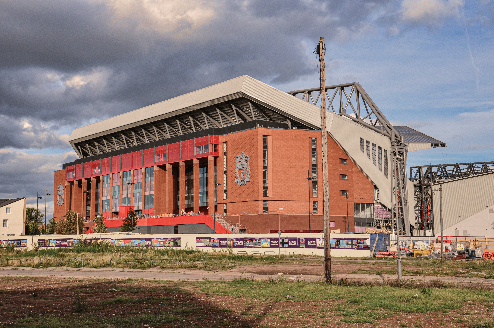

Liverpool FC
LIverpool is currently having the a brutal season. After coming of it's first Championship in the leauge in thirty years, this Northern English side is struggling. Liverpool is currently sit 7th in the leauge. Their hopes of retaining the titles have gone. This season has been plagued with injuries and without the fans, its truly been tough.
Liverpool look to finish their season strong and hope for a top-four finish. They need European leauge matches next season to stay in tip top shape. Liverpool still have a chance to win the UEFA Champions Leauge, that could be their ticket back into the tournament next year.
On this website you'll find some information about the great English Club as well as some other cool photos and facts. Below is a list of games up and coming
Remember You'll Never Walk Alone.
